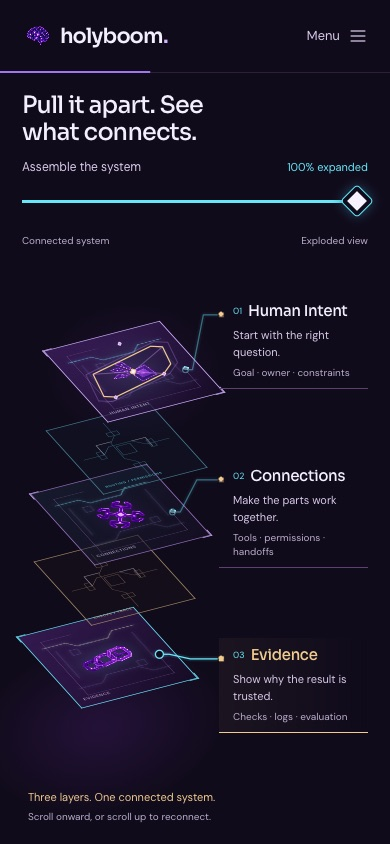
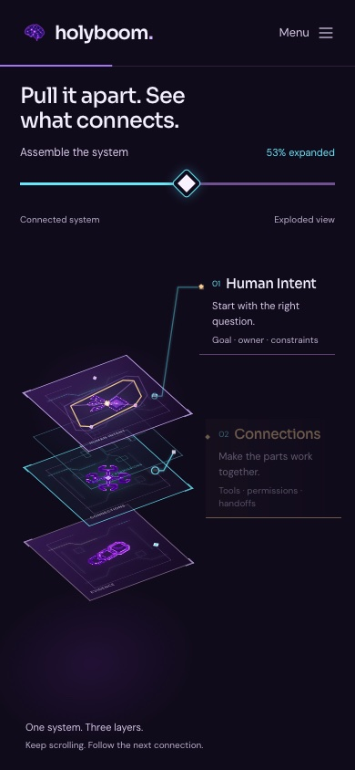
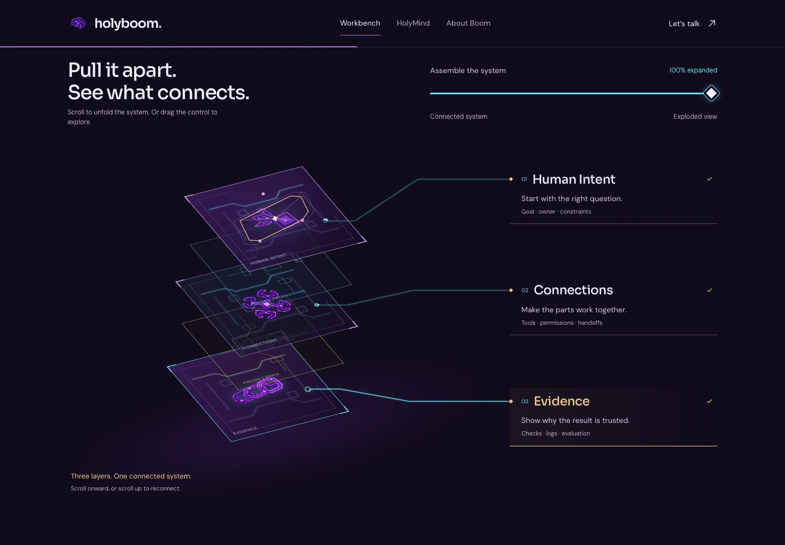
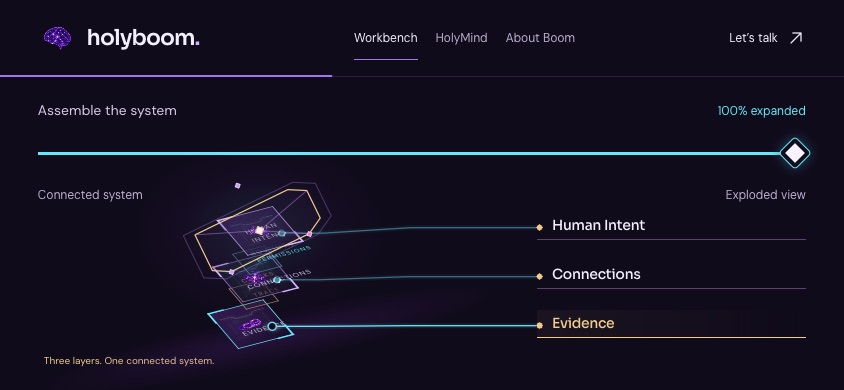

Open the published website · Jump to assembly
Touch the mind.
Unfold the system.
Interaction v10 — captured from the public website. Three real touch taps trigger the HolyMind discharge, then native wheel input unfolds and reconnects the pinned diagram. This is a browser recording, not a generated mockup.
68 Chromium + 68 WebKit acceptance checks passed.
Zero failed assertions or captured runtime errors. An additional 85-check energy/continuity regression passed locally. Original 37 image assets remain unchanged.
Zero failed assertions or captured runtime errors. An additional 85-check energy/continuity regression passed locally. Original 37 image assets remain unchanged.
The completed pinned view


Desktop and short landscape

